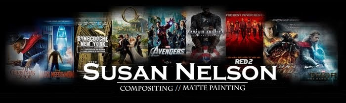

Resume
Experience
Method Studios/Iloura Sydney
Role: Senior Compositor
Film: : Skyscraper, Outlaw King (Netflix)
Duration: 03/2018 - 08/2018
Description: : At Method Studios we worked under tight deadlines to produce high-quality pictures, including Dwayne “The Rock” Johnson’s Skyscraper, and the soon-to-be-released Netflix film, Outlaw King.
Animal Logic
Role: Senior Compositor
Film: Peter Rabbit
Duration: 08/2017 - 01/2018
Description: At Animal Logic we brought to life the characters of the box office success, Peter Rabbit! I learned many innovative tools and ideas thanks to Animal Logic’s well thought-out pipeline.
Tippett Studio
Roles: Compositor / Environment Artist / Nuke Tool Developer
Films: Ted 2, Anwei Flying Dream (a 180-degree ride film), Monster Strike, League of Gods, Lemony Snicket and a Series of Unfortunate
Events (Netflix series)
Duration: 02/2015 - 02/2017
Description: At Tippett I primarily worked as a compositor, however I also had the opportunity to work as a Nuke tool developer and a matte painter from time to time.
Scoundrel Inc.
Role: Senior Compositor
Films: Deliver Us From Evil, Think Like a Man 2, The Wedding Ringer
Duration: 10/2013 - 08/2014
Description: At Scoundrel I worked as a Lead Compositor where I setup comp templates, developed Nuke tools, and supervised a small team.
Evil Eye Pictures
Roles: Compositor, Matte Painter, and Paint Artist
Films: The Avengers, Oz the Great and Powerful, Thor 2, Ghost Rider: Spirit of Vengeance,
Duration: 08/2011 - 08/2013, 04/2017 - 05/2017
Description: At Evil Eye I gained experience on some of my highest profile projects including The Avengers, Oz the Great and Powerful, and Thor 2.
ImageMovers Digital
Role: Junior Matte Painter
Films: A Christmas Carol, Mars Needs Moms
Duration: 05/2008 - 05/2010
Description: At Imagemovers Digital I created 3D matte paintings for fully CG, stereoscopic films. I also contributed some compositing and concept art.
Freelance
Role: Compositor and Matte Painter
Films: Captain America, Red2, Synecdoche NY, Planet Dinorsaur
Duration: various short-term contracts (about 2-6 months) between employment at the companies above
Skills
Advanced: Nuke compositing, look development, CG compositing, deep compositing, Nuke gizmos, Nuke’s 3D environment, set extension
Intermediate: Matte Painting, tool development, Python
Entry-level: Nuke plug-ins, C++, openCV (computer vision library)
Education
Academy of Art (2005-2007)
graduate studies in Visual Effects, found employment prior to graduation
Rhode Island School of Design (2001-2005)
undergraduate studies in Film/Video/Animation, graduated with honors